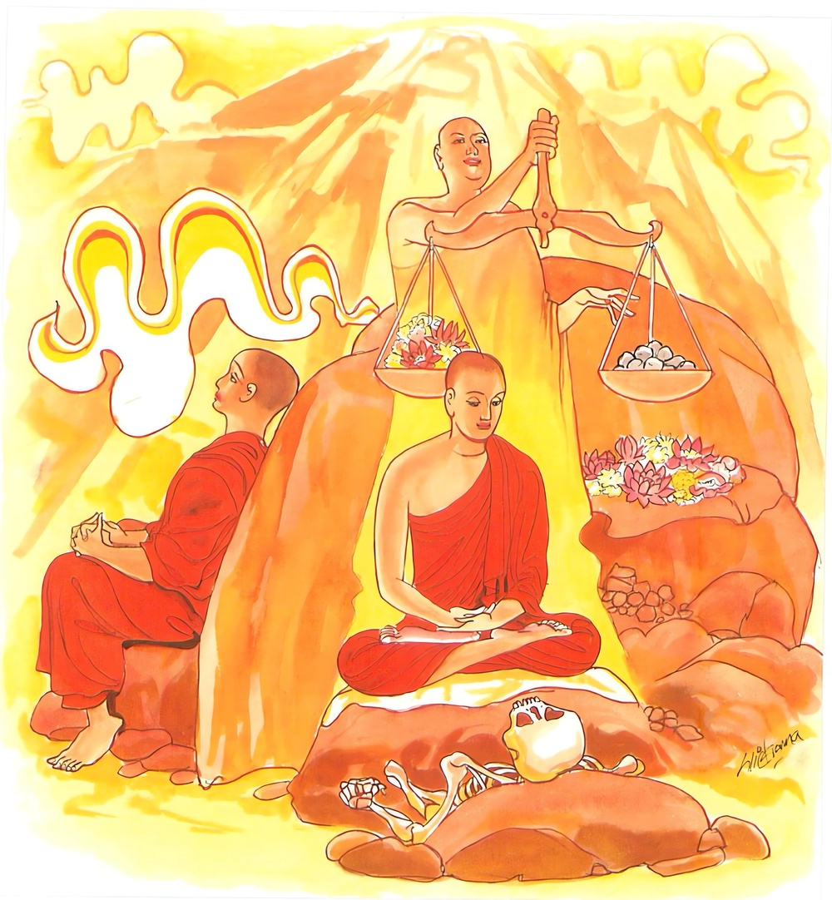
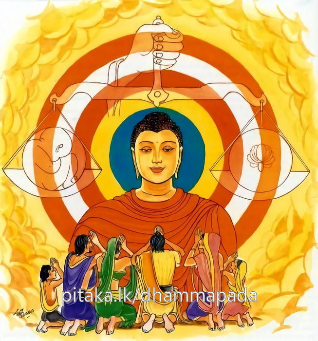

19-8 නියම මුනිවරයා
මෙම කතාව ධම්මපද අටුවාවෙන් ද කියවන්න.
න මොනෙන මුනී හොති මූළ්හරූපො අවිද්දසු
යො ච තුලං’ව පග්ගය්හ වරමාදාය පණ්ඩිතො.
මූඪ වූ (තුච්ඡ වූ) ස්වරූප ඇති අනුවණ පුඟුල් තෙමේ මුවෙන් නොබැණ හුන් පමණින් මුනි නම් නො වෙයි. නුවණැති යමෙක් වනාහි ඉදින් තුලාවක් ගෙණ සිටි එකක්හු මෙන් (හෙවත් තරාදියක් ගෙණ කිරන්නට සිටියක්හු මෙන්) ගත යුතු උතුම් දැය ගෙණ වෙසේ ද,

පාපානි පරිවජ්ජෙති ස මුනී තෙන සො මුනි
යො මුනාති උභො ලොකෙ මුනි තෙන පවුච්චති.
දුරැලිය යුතු අකුසල් දුරැ ලා ද, ඒ මුනි තෙම ඒ කරුණින් මුනි නම් වේ. (ඒ එසේ ම ය.) යමෙක් (ආධ්යාත්මික ස්කන්ධ වාහ්ය ස්කන්ධ යැ යි කියන ලද) උභය ලෝකයන් (තරාදියට නඟා කිරන්නක්හු මෙන්) නුවණින් පිරිසිඳ දනී ද, එ කරුණින් හේ මුනි යැ යි කියනු ලැබේ.

තීර්ත්ථකයෝ වැළඳූ තන්හි මිනිසුනට අනුමෝදනා පිණිස “යහපතෙක් වේවා, සැපතෙක් වේවා, ආයු වැඩේවා, අසුවල් තැන කටු ඇත්තේ ය, එතන්හි නො යෙත්වා” යනාදි ලෙසින් මගුල් කියා තමන් වසන් තැන් බලා යෙත්. භික්ෂූන් වහන්සේලා බුද්ධත්වය පිළිබඳ ප්රථමබොධියෙහි අනුමෙවෙනි බණ වදාරන්නට නො අනුදත් බැවින් බත්හලෙහි වළඳා මිනිසුනට අනුමෙවෙනි බණ නො වදාරා ම නික්ම යන්නෝ ය. එකල්හි මිනිස්සු “ අපි තීර්ත්ථකයන් වෙතින් මඟුල්බණ අසන්නෙමු, ඔවුහු අපට ආසාරි පතන්නේ ය, හිත පතන්නෝ ය, මේ පින්වතුන් වහන්සේලා දන් වළඳා කිසිත් නො බැණ නිහඬ ව ම යන්නාහ”යි අවමන් කළහ. භික්ෂූන් වහන්සේලා මේ වග බුදුරජාණන් වහන්සේ ට දන්වා ලූහ. එවිට උන්වහන්සේ “මහණෙනි! මෙතැන් පටන් තමුසේලා ද බත්හල්හි දන් වළඳා අවසන්හි සැපපහසු ඇති පරිදි කැමැති සේ අනුමෙවෙනි බණ කියවු, වෙත පැමිණියවුනට දහම් දෙසවු”යි අනුදත් සේක. එතැන් පටන් භික්ෂූන් වහන්සේලා එසේ අනුමෙවෙනි බණ වදාළාහු ය. මිනිස්සු අනුමෙවෙනි ඈ බණ අසන්නෝ සැදැහැයෙන් ඔද වැඩි ව වීර්ය්යවත් ව භික්ෂූන්ට ආරාධනා කොට පුදසැලකිලි වඩවඩාත් කරන්නට පටන් ගත්හ. ඒ දුටු තීර්ත්ථකයෝ “දොඩමලුවීම නො හොබනා බැවින් අපි මුවෙන් නො බණුම්හ, අපි මුනීහු වම්හ, එහෙයින් නිහඬ වම්හ, ශ්රමණ ගෞතමයන්ගේ ශ්රාවකයන් දන්හල්හි මහාහඬ නඟා දොඩමලුව බණ දෙසති”යි අවමන් කරන්නට වූහ. බුදුරජානන් වහන්සේ නිවටුන්ගේ ඒ කතාව අසා “මහණෙනි! මම නිහඬවීම් පමණින් මුනි යි නො කියමි, මේ ලෝකයෙහි ඇතැම් කෙනෙක් කියන්නට කිසිත් නො දන්නා බැවින් නිහඬ වෙත්, ඇතැම් කෙනෙක් බිය නිසා නිහඬ වෙත්, ඇතැම් කෙනෙක් අපගේ මේ දහම් අන්යයෝ නො දනිත්වා යි මසුරු බැවින් නො කියත්, එහෙයින් නිහඬවීම් පමණින් මුනි නම් නො වේ, පව් සන්සිඳවාලීමෙන් ම මුනි නම් වේ ය”යි වදාරා මේ ධර්මදේශනාව කළ සේක.
න මොනෙන මුනී හොති මුළ්හරූපො අවිද්දසු,
යො ච තුලංව පග්ගය්හ වරමාදාය පණ්ඩිතො.
.
පාපානි පරිවජ්ජෙති සමුනි තෙන සො මුනී,
යො මුනානි උභො ලොකෙ මුනි තෙන පවුච්චතීති.
මූඪ වූ ගති ඇති අඥාන පුද්ගල තෙමේ මුවෙන් නො බැණ හුන් පමණින් මුනි නම් නො වේ. නුවණැති යමෙක් වනාහි තරාදියක් ගෙන සිටියකු මෙන්, ගත යුතු උතුම් ගුණය ගෙණ පාපයන් දුරු කෙරේ ද ඒ මුනි තෙමේ එකරුණෙන් මුනි නම් වේ. යමෙක් දෙලොව නුවණින් පිරිසිඳ දනී ද ඒ හේතුයෙන් හෙතෙමේ මුනි යි කියනු ලැබේ.
න මොන්නෙ මුනී හොත මූළ්හරූපො අවිද්දසු = සිස් සැහැවි ඇති නුවණ නැත් තැනැත්තේ නිහඬවීම් පමණින් මුනි නො වේ.
මූළ්හරූප නම්: සිස් සැහැවි ඇත්තේ ය. එලොව මෙලොව ගැණ යුතු අයුතු ගැණ පින් පව් ගැණ වරද නිවරද ගැණ දැනුම් නැත්තේ ය. මූඪ වූයේ ය. “මූළ්හරූපොති තුච්ඡරූපො” යනු අටුවා. කිසිවක් නො දන්නේ අවිද්දසු ය. “අවිද්දසූති අවිඤ්ඤු” යනු අටුවා. එකාර්ත්ථවත් පදදෙකක් එක් තැන යෙදී සිටි කල්හි අධිකාර්ත්ථයක් කියන බැවින් එසේ වූ මේ දෙපදය අධික මූඪත්වය ඇත්තකු කියන්නේ ය.
යො ච තුලං ඉව පග්ගයහ වරං ආදාය පණ්ඩිතො = නුවණැති යමෙක් තරාදියක් ගෙණ අධිකය හැර අඩුව පුරන්නා සේ ශීල සමාධ්යාදිගුණය ගෙණ.
වර්තමාන ව්යවහාරයෙහි එන තරාදිය තුලා නම්: “පක්ඛානං සමතාහිතභාවකරණතො තුලයති මිණාති එතායාති = තුලා” පක්ෂයන්ගේ සමභාවය කිරීමෙන්, දෙපක්ෂය සමකිරීමෙන් යමකින් මැණීම කෙරේ නම් ඒය තුලා.
පාපානි පරිවජ්ජෙති = පව් දුරු කෙරේ ද, [1]
සො මුනි තෙන සො මුනි = ඒ මුනි තෙමේ එකරුණෙන් මුනි නම් වේ.
යො මුනාති උභො ලොකෙ මුනි තෙන පවුච්චති = යමෙක් දෙලොව පිරිසිඳ දනී ද ඒ හේතුයෙන් හෙතෙමේ මුනි යි කියනු ලැබේ.
නුවණැත්තේ තරාදියක් ගෙණ වැඩි දැය බැහැර කොට අඩු දැය බහා පුරන්නා සේ ශීලසමාධ්යාදී වූ උතුම් ගුණයෙහි පිහිටා ගෙණ පව් දුරු කරන්නේ ය. එසේ ම හෙතෙමේ ස්කන්ධලෝකයෙහි ආධ්යාත්මික - බාහ්යසකන්ධාදී වූ උභයාර්ත්ථයන් දන්නේ ය. එලොව මෙලොව හා ආත්මහිත පරහිත දන්නේ ය. එහෙයින් මුනි යි කියනු ලැබේ. [2]
ධර්මදේශනාවගේ අවසානයෙහි බොහෝ දෙන සෝවන්ඵලාදියට පැමිණියාහුය.
තීර්ත්ථකවස්තුව නිමි.